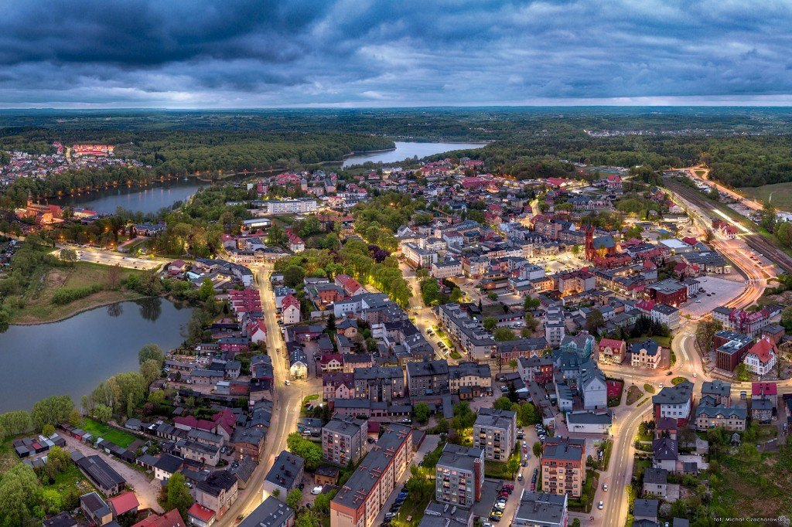

Kartuzy są laboratorium renowacji istniejącej zabudowy. Prace obejmują integrację błękitno-zielonej infrastruktury oraz ocenę opłacalności i skutków środowiskowych.

Partnerem miejskim jest Gmina Kartuzy. Po stronie polskiej w konsorcjum są też Politechnika Gdańska, Gdański Uniwersytet Medyczny, Uniwersytet Gdański, Gdańska Fundacja Innowacji Społecznych i — jako partner stowarzyszony — Foton-OZE.
Zakres
- renowacja energetyczna istniejącej tkanki miejskiej,
- błękitno-zielona infrastruktura,
- wykonalność ekonomiczna i zrównoważenie środowiskowe.
Powiązane aktualności
Gdy pojawią się relacje z terenu, będą oznaczane tym laboratorium. Na razie jest tu wpis przykładowy: